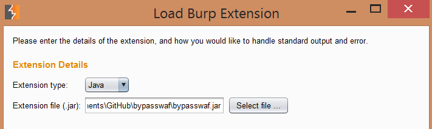
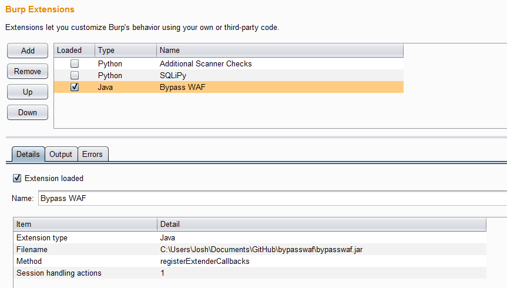
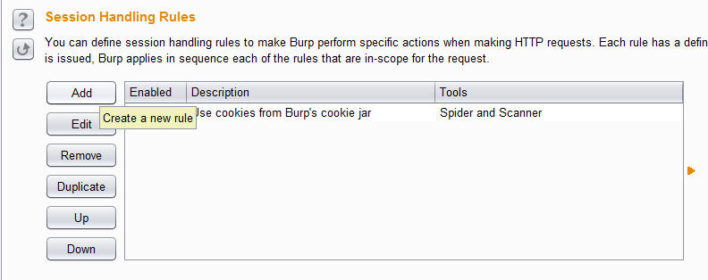
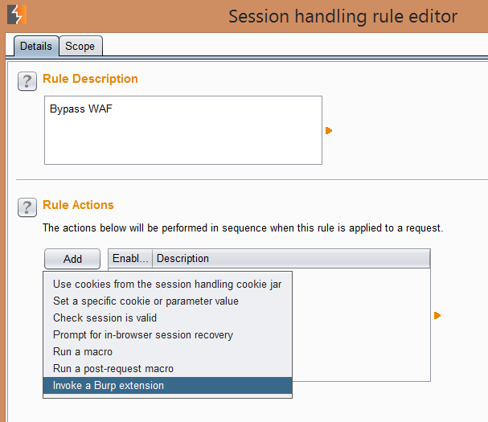
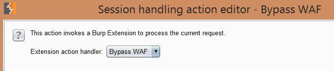
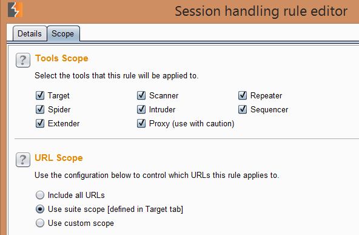

To use this plugin to add the necessary headers, first you need to either download the
Python version of the plugin, the Java version of the plugin, or the Java source and
compile yourself. Once you have the plugin, start up Burp and navigate to “Extender-
Extensions” and click the “Add” button. Choose an extension type of “Java”, if using the
Java Plugin, or “Python”, if using the Python version, and then navigate to the extension
path. The configuration should look something like:

The plugin should now be loaded and display something like:

Now you need to navigate to “Projecr options->Sessions” and then click on the “Add” button for the “Session Handling Rules” configuration section as shown below:

Give the rule a name and then click the “Add” button in the “Rule Actions” section, and choose “Invoke a Burp extension” as shown below:

You should be able to select “Bypass WAF” in the drop down box as seen below:

Bypass WAF contains the following features:

Most of the new features are based on Ivan Ristic’s WAF bypass work found here and here. A description of each feature follows:
- Users can modify the X-Originating-IP, X-Forwarded-For, X-Remote-IP, X-Remote-Addr headers sent in each request. This is probably the top bypass technique i the tool. It isn’t unusual for a WAF to be configured to trust itself (127.0.0.1) or an upstream proxy device, which is what this bypass targets.
- The “Content-Type” header can remain unchanged in each request, removed from all requests, or by modified to one of the many other options for each request. Some WAFs will only decode/evaluate requests based on known content types, this feature targets that weakness.
- The “Host” header can also be modified. Poorly configured WAFs might be configured to only evaluate requests based on the correct FQDN of the host found in this header, which is what this bypass targets.
- The request type option allows the Burp user to only use the remaining bypass techniques on the given request method of “GET” or “POST”, or to apply them on all requests.
- The path injection feature can leave a request unmodified, inject random path info information (/path/to/example.php/randomvalue?restofquery), or inject a random path parameter (/path/to/example.php;randomparam=randomvalue?resetofquery). This can be used to bypass poorly written rules that rely on path information.
- The path obfuscation feature modifies the last forward slash in the path to a random value, or by default does nothing. The last slash can be modified to one of many values that in many cases results in a still valid request but can bypass poorly written WAF rules that rely on path information.
- The parameter obfuscation feature is language specific. PHP will discard a + at the beginning of each parameter, but a poorly written WAF rule might be written for specific parameter names, thus ignoring parameters with a + at the beginning. Similarly, ASP discards a % at the beginning of each parameter.
- The “Set Configuration” button activates all the settings that you have chosen.